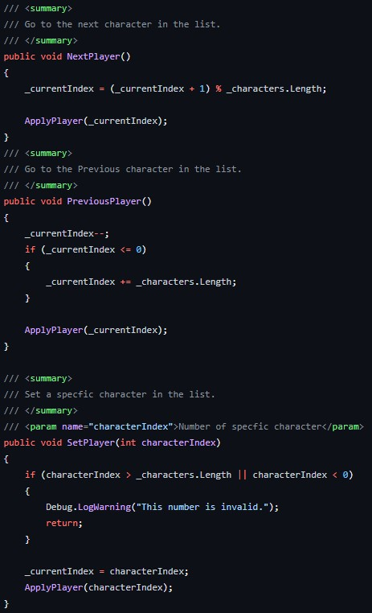
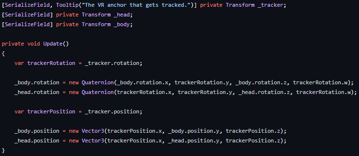

Tijdens karaoké wil je niet saai een beetje zingen, daarom hebben we special effects zoals confetti, rookmachine, vuurwerk en lampen die draaien. De bedoel was dat de andere spelers dit zou doen via de knoppen, maar mulitplayer werd hem niet. Hierdoor is de random events ontstaan.
In een mulitplayer game wil je natuurlijk dat iemand jou representeert. Daarom heb ik gewerkt aan character selection. Ook nog dat de VR rig is gekoppeld aan de models van de charachter, alleen dit is jammer genoeg niet gebruikt wan mulitplayer is er niet.


Win System:
Voor elke game is er een gameloop nodig. Klein probleem, het is de laatste sprint en er is geen gameloop. Dus ik en Daniel hebben hele (niet) mooie code geschreven om een game loop te maken in weinig tijd. Wat er in moet zitten is een moment dat de AI en speler hebben gezongen, zodat er een winner kan gekozen worden. Er was gepland om een vote system te maken, maar weinig tijd dus dan maar random 1 van de 2 kiezen. Onderaan staat code voor de winscreen om te laten draaien.